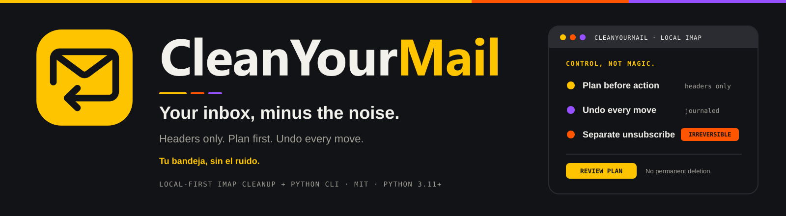
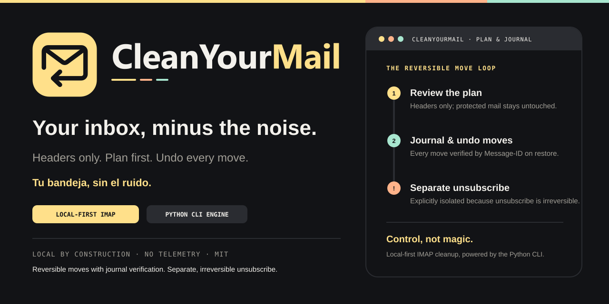
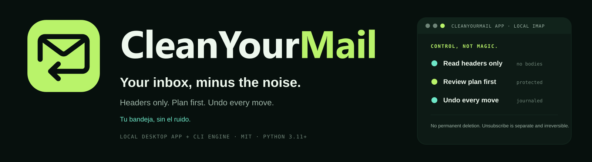

CleanYourMail
Control, not magic. The Return Fold desktop app and CLI identity in the high-contrast Spectrum palette: warm yellow primary tile, purple journal/undo markers, and orange irreversible-unsubscribe warnings.
Your inbox, minus the noise.
Tu bandeja, sin el ruido.
Symbol scale test (16 px – 256 px)
Solid yellow (#FFC400) tile with a single near-black (#121316) Return Fold glyph (11.63:1 contrast). The three-stripe ribbon is never placed inside the symbol or favicon.
Desktop app icon — dark & light dock / taskbar mock
1024×1024 rounded-square desktop app icon with 96 px macOS/Windows safe margins, dark #121316 outer bezel, #2A2C31 inner rim, and #FFC400 Return Fold badge.
Favicon and monochrome symbol
favicon.svg is simplified for 16–32 px browser tabs. mono.svg and app-icon-mono.svg use single-ink (#121316) outlines.
Primary lockups & restrained three-stripe accent
The symbol stays a solid yellow tile; the three-stripe structural rule (yellow dominant, orange, purple) sits calmly below the wordmark.
Wordmark and light-background variant
wordmark.svg uses outlined vector paths (#F3F1EC CleanYour + #FFC400 Mail). light.svg uses #F3F1EC canvas, #121316 tile, and accessible deep amber #8A5200 (5.66:1) for Mail.
Repository banner (1600 × 440)
banner.svg · Restrained top structural ribbon, section marker, and semantic step roles.

Social / Open Graph card (1280 × 640)
social.svg · Local desktop app + Python CLI engine with yellow plan, purple undo, and orange irreversible-unsubscribe callout.

Semantic color roles & tokens
Each accent color maps to a specific product truth rather than equal-weight decoration.
Primary Action, Plan & Logo Tile
Used for the Return Fold tile, "Mail" in the dark wordmark, primary CTAs ("Review Plan"), and step 1. Always pair yellow surfaces with near-black (#121316) ink.
Journal, Undo & Secondary Path
Used for append-only journal badges, undo step markers, and secondary graphic accents. Never use for small body text on dark backgrounds.
Attention & Irreversible Unsubscribe
Reserved for warnings and the separate, irreversible unsubscribe flow. Use near-black (#121316) text on orange badges.
#121316
#2A2C31
#F3F1EC · 16.46:1
#A19E96 · 6.94:1
#FFC400 · 11.63:1
#FF5500 · 5.80:1
#9650FF · 4.32:1
#8A5200 · 5.66:1
Side-by-side comparison: Spectrum (`brand/final-spectrum/`) vs Green (`brand/final/`)
Both packages share the exact Return Fold geometry and outlined wordmark, differing only in palette and the restrained three-stripe Spectrum accent.
Spectrum (`brand/final-spectrum/`)
Forest / Lime (`brand/final/`)
